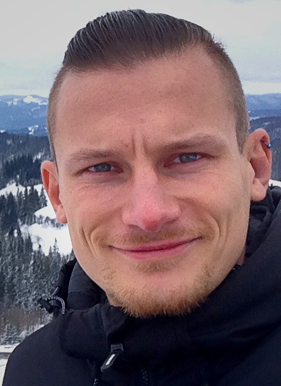

ABOUT

Photography has taught me to look more deliberately.
I have always loved beauty, and I find it in many different forms. Birds are fascinating. Familiar, yet elusive. They live around us every day while remaining surprisingly difficult to truly see.
I see myself as an explorer. I want to go somewhere and see what is there, to open my eyes and my mind to places, landscapes and forms of life I might otherwise never encounter.
Nature is at the centre of my photography. But while travelling, I am also drawn to places shaped by human history: monuments, industrial sites, historical remains. Not just "lost places". But witnesses to another time. I am interested in what they tell us about ourselves, our lives, and where we have come from.
Over time, I began to wonder about the connection between these two parts of my photography. What happens when a bird, a landscape, a monument or an abandoned industrial site is placed next to another?
I do not photograph simply to collect images or to display them. I photograph because something makes me stop and look. And I want to share those moments with people who are willing to look with me.
CONTACT
For inquiries, please contact me at [DEINE E-MAIL-ADRESSE]